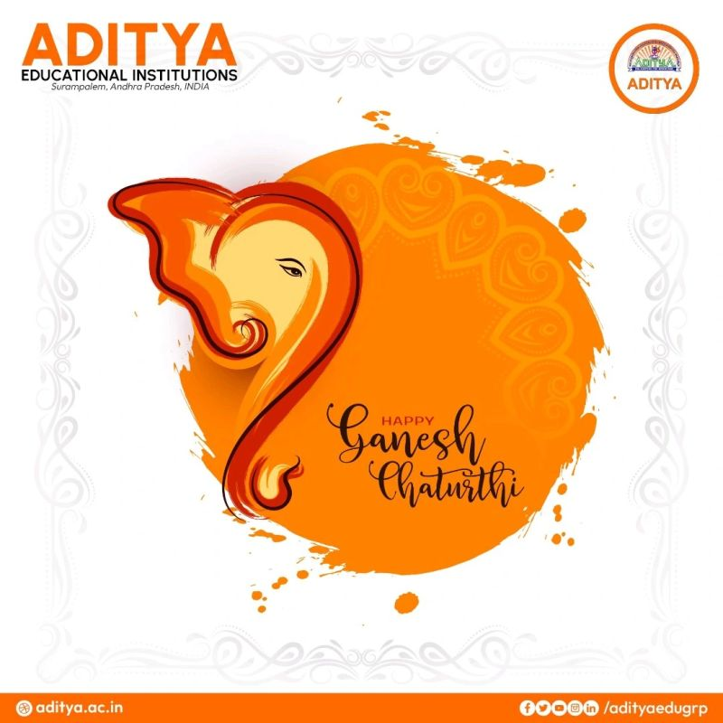
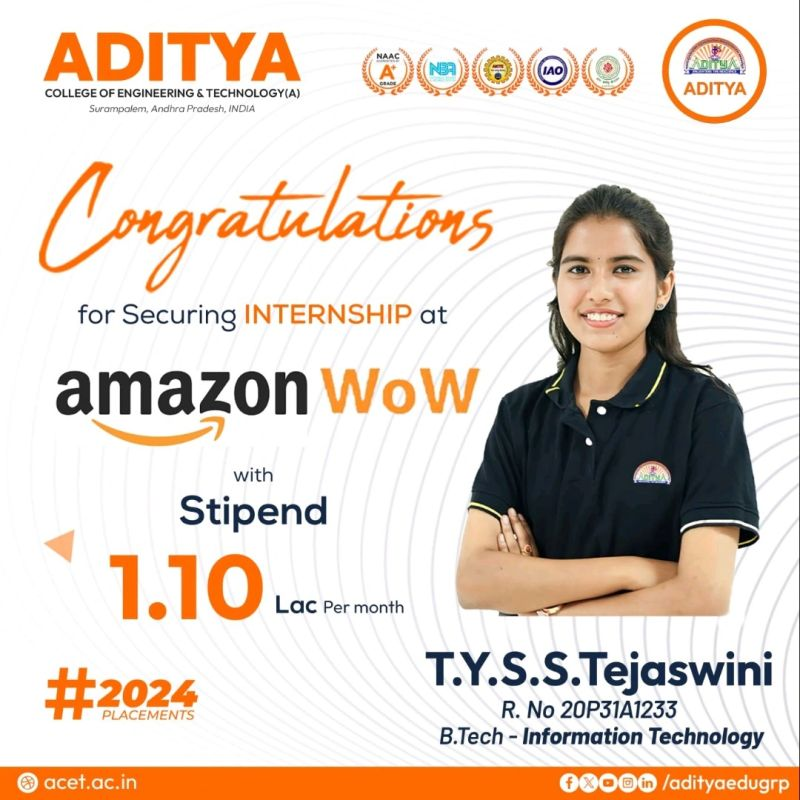
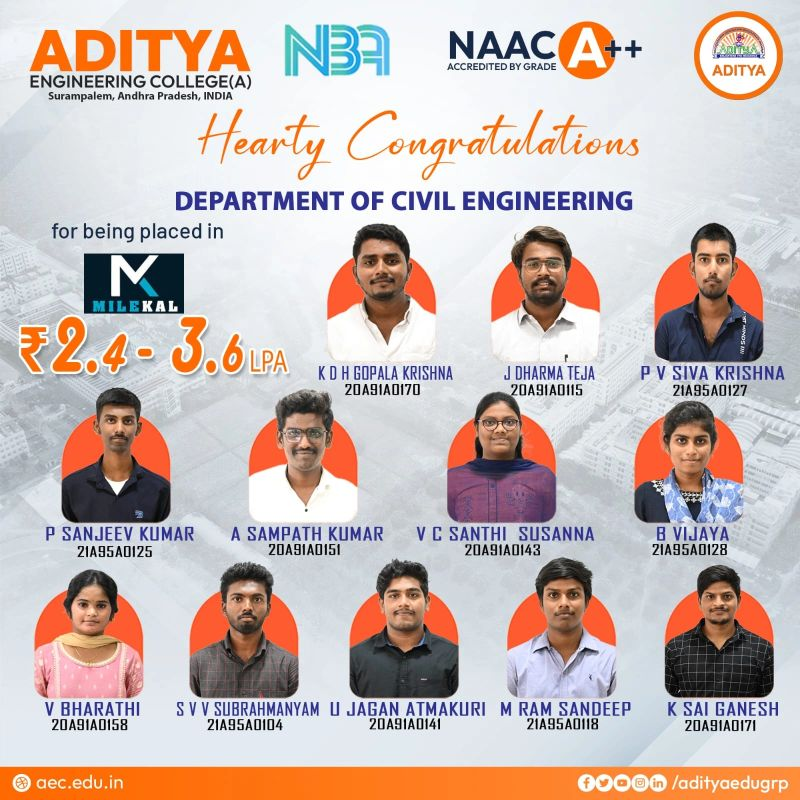
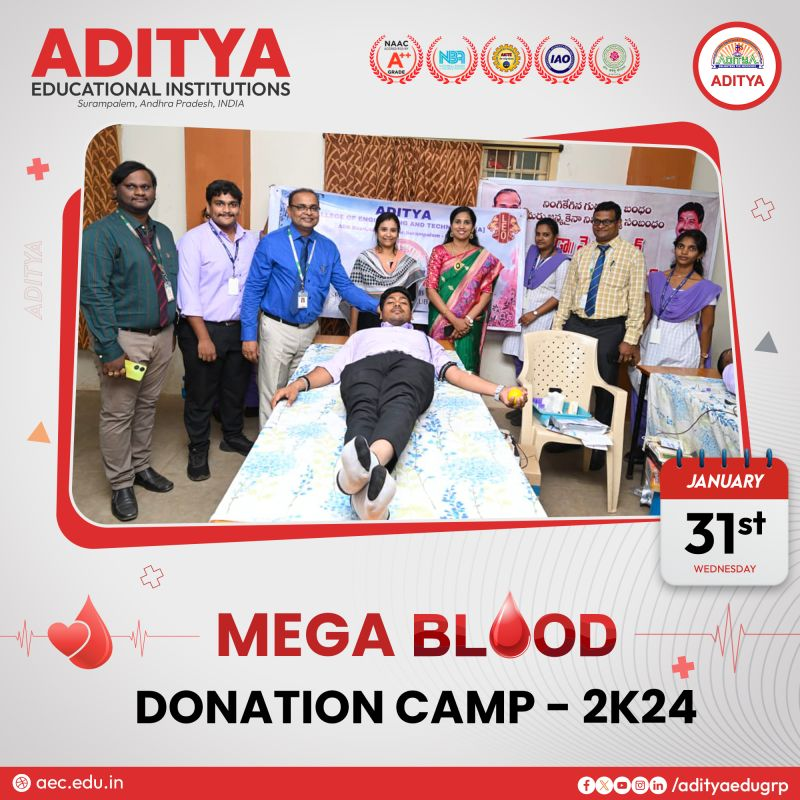
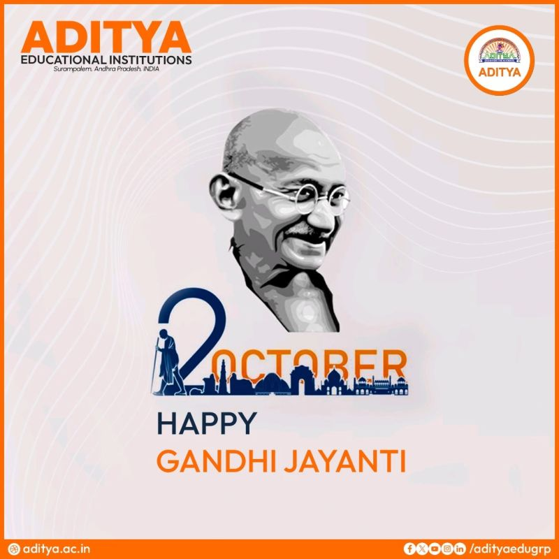
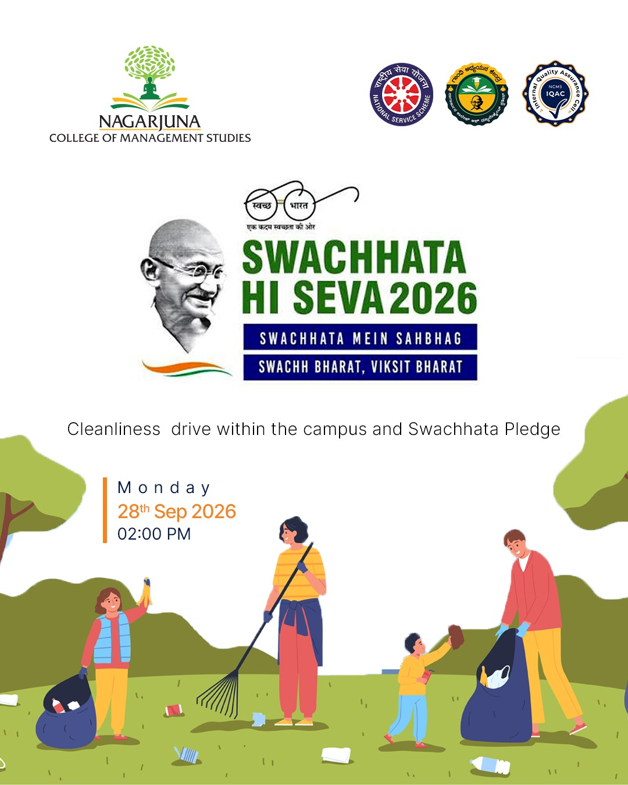
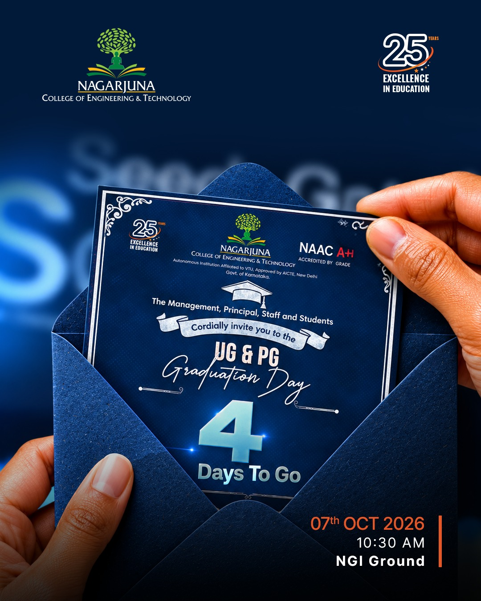
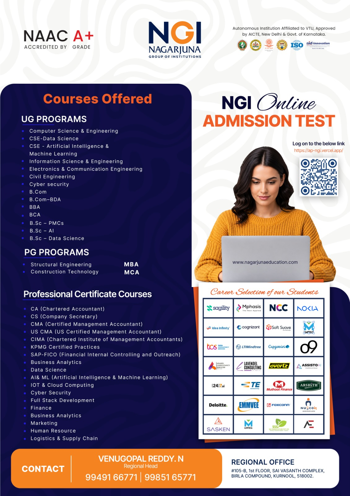
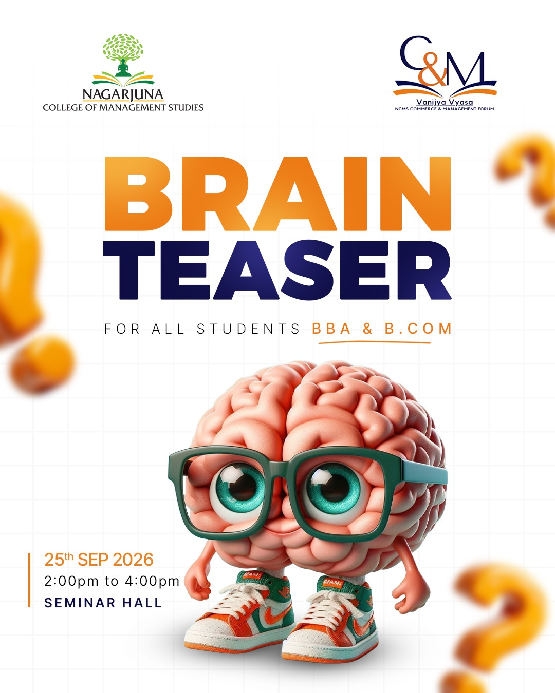

Three Institutions. Three Different Challenges. One Playbook.
Before we talk about what we'll build for Kaveri University, here's proof that we can actually deliver it — in higher education, in a multi-institution group, and in the corporate world.

One streamlined digital presence, one accountable team

Consistent branding carried from the website to the campus

Celebrating student placements as they happen

Every placement story told the Aditya way

Department-wide placement announcements, handled end to end

Campus life and CSR activity, covered in real time

Festival greetings, always on-brand and on time
From Scattered Pages to One Streamlined Story
When we began working with Aditya University, their digital presence was spread thin — multiple disconnected pages, inconsistent updates, and no single team accountable for what actually went live.
Technical Hub streamlined their web pages into one consistent, well-structured experience, then took over day-to-day content moderation — so every update, from faculty achievements to admissions announcements, is accurate, on-brand, and published on time.
The result: a single, trustworthy digital front door for the university, and an internal team that no longer has to chase down who posted what, or when.
End-to-End Marketing, Without the Hand-Holding
Torii Minds needed more than occasional design support — they needed a marketing partner who could own the full funnel, from strategy to execution.
Technical Hub built and ran end-to-end digital marketing services for Torii Minds: strategy and content planning, paid campaigns, social media management, and performance reporting — all under one accountable team.
Instead of juggling multiple freelancers and vendors, Torii Minds got a single point of contact and one consistent brand voice across every channel they used.

Consistent engagement, replicated across every campus

One branding team, coordinating nine institutions

Campus initiatives, covered at Nagarjuna College of Management Studies
Technical events, promoted at Nagarjuna College of Engineering & Technology

Milestone moments, designed and published on schedule
Festival greetings carrying one consistent NGI identity

Admissions creatives for the entire Nagarjuna Group

Student engagement content, campus by campus
One Portal, Nine Institutions, Zero Chaos
The Nagarjuna Group of Institutions runs nine different institutions, each with its own events, announcements, and social media needs. Before Technical Hub, that meant nine different conversations and constant follow-ups just to get one post approved.
We solved that by rolling out our T@G Portal across all nine institutions — giving every campus coordinator a single place to raise design requests, track progress, and coordinate social media posts, while Technical Hub's branding team manages execution centrally.
The result: consistent branding across the entire group, faster turnaround, and total visibility into what's being published, by whom, and when.